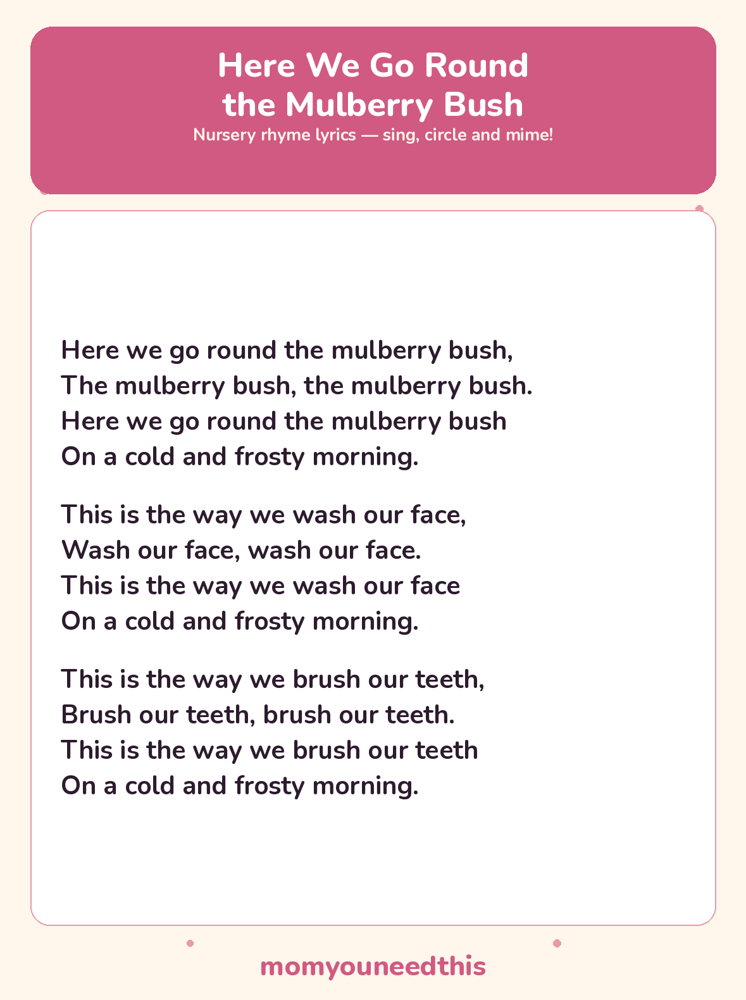

Here We Go Round the Mulberry Bush The Singing Game, With Lyrics and a Free Printable
Here We Go Round the Mulberry Bush is a traditional nursery rhyme and singing game in one — children hold hands, walk in a circle, then mime the morning jobs in the verses. The full lyrics are below, with a free printable lyrics sheet to sing along.
Last updated: October 25, 2026
Quick Answer
Here We Go Round the Mulberry Bush is a nursery rhyme played as a circle game. Children sing the main verse walking round in a ring, then copy the actions in verses like washing faces and brushing teeth. The lyrics on this page include the main verse plus two action verses, with a free printable.
At a Glance
- Rhyme: Here We Go Round the Mulberry Bush
- Type: Singing game / action rhyme
- Verses: 3 — the main verse plus 2 action verses
- Best for: Ages 2–6
- Printable: 1 lyrics sheet
- Cost: Free — print at home
🎵 Here We Go Round the Mulberry Bush Lyrics
Here we go round the mulberry bush,
The mulberry bush, the mulberry bush.
Here we go round the mulberry bush
On a cold and frosty morning.
This is the way we wash our face,
Wash our face, wash our face.
This is the way we wash our face
On a cold and frosty morning.
This is the way we brush our teeth,
Brush our teeth, brush our teeth.
This is the way we brush our teeth
On a cold and frosty morning.

✂️ Download Your Free Here We Go Round the Mulberry Bush Lyrics Sheet
All the lyrics from this page on one sheet, in big, well-spaced type for young readers.
⬇️ Download Free Lyrics Sheet 🖨️ Print🎁 Free printable for ages 2–6
🔄 Play the Circle Game
Everyone stands in a circle, holds hands, and walks round together while singing the main verse. On “This is the way we…” verses, let go of hands and mime the job in the middle of the circle — rubbing sleepy faces clean for wash our face, holding a pretend toothbrush for brush our teeth. Then join hands again and off round the bush you go.
Families have always added their own verses to this game — comb our hair, put on our shoes, eat our breakfast — sung to exactly the same pattern. The two action verses printed here are the classic starters; once children know the shape of the song, let them invent the next morning job themselves.
🖨️ How to Use This Rhyme
- Gather in a circle. Hold hands and walk round together for the main verse — small steps, same direction, no racing.
- Mime the actions. Let go of hands for wash our face and brush our teeth, and copy the movements big and slow so toddlers can follow.
- Print the lyrics sheet. One page holds all three verses, handy for grandparents, teachers, and anyone leading the game.
- Let your child lead a verse. Choosing the next action to mime — and singing the line that goes with it — is the favourite job in the game.
🎵 More Rhymes & Fun
🎵 Sing More Rhymes
Every rhyme in this set lives on one hub page, with lyrics and a printable for each. Browse the collection.
🎵 Five Little Monkeys
The counting-down rhyme, sung on five wiggling fingers. Read the lyrics.
🎵 Jack Be Nimble
The tiny jumping rhyme — one verse, one very proud jump. Read the lyrics.
🎨 Free Coloring Pages
Hundreds of free coloring sheets to print for every age. See the coloring pages.
❓ Here We Go Round the Mulberry Bush FAQ
What are the lyrics to Here We Go Round the Mulberry Bush?
They are printed in full above — the main “Here we go round” verse, plus the wash-our-face and brush-our-teeth action verses, all ending “on a cold and frosty morning.” The same verses are on the free printable sheet.
What age is Here We Go Round the Mulberry Bush for?
It suits ages 2 to 6. Toddlers can walk the circle holding a grown-up’s hands and copy the miming, while older preschoolers lead verses and invent new actions of their own.
Can I print the lyrics sheet?
Yes — the lyrics sheet is free to print at home with no signup. It carries the same three verses as this page, in big, well-spaced type.
How many verses does the Mulberry Bush rhyme have?
Far more than three in tradition — the game keeps growing verses for the whole morning routine, and families add their own. This page prints the main verse and the two best-known action verses, which is the set most children learn first.